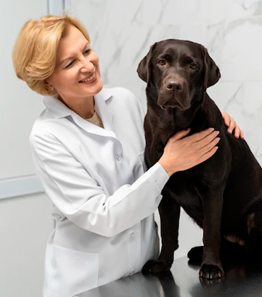
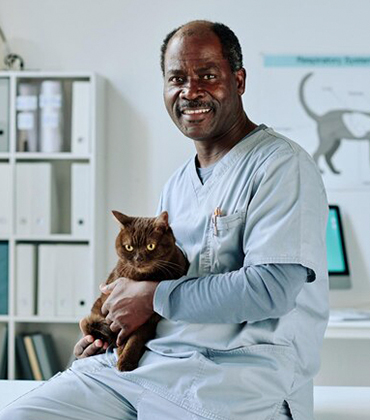
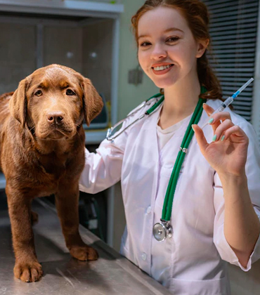

Quem Somos
Acreditamos na especialização veterinária como forma de oferecer um alto nível de atendimento na área da saúde animal. Acreditamos no uso de ferramentas e equipamentos que incrementam e aceleram o diagnóstico.
Acreditamos no trabalho em equipe como forma de aumentar a assertividade no diagnóstico e no tratamento.
Acreditamos que o paciente deve ser o centro de nossas atenções.
Acreditamos que o proprietário deve ser engajado na vida do seu animal.
Nossa maior alegria é acolher com dedicação e amor cada animal que recebemos. E temos muita satisfação em oferecer
aos nossos clientes toda a assistência necessária à saúde e ao bem-estar de seus pets 24 horas por dia, como tem
sido nesses 10 anos de existência.
Assim como o seu melhor amigo, estamos sempre aqui para receber você, seja dia ou noite.
Dra. Maria Souza
Graduação em Medicina Veterinária, pela UFRJ (2013). MBA em Gestão Empresarial, pela UNESA (2014-2016).
Agende uma consultaDr. Mauro Pereira
Graduação em Medicina Veterinária, pela UFRRJ (2002). Curso de interpretação laboratorial em Clínica Veterinária (2013).
Agende uma consultaDra. Melissa Costa
Graduação em medicina veterinária na Universidade Estácio de Sá (2019). Curso intensivo em emergência e urgência – CDMV (2019).
Agende uma consulta